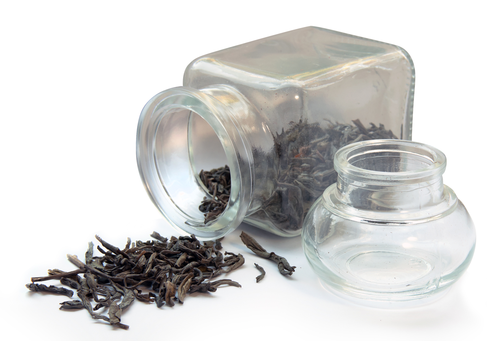

Current state vs. (eve)nt sourcing
Table of Contents
- 1 Me
- 2 doo.net
- 3 Title
- 4 Motivation
- 5 The example
- 6 The example scenario
- 7 Clojure book
- 8 Tea
- 9 The shopping cart
- 10 The second scenario
- 11 Current State of the second scenario
- 12 Event Sourcing - first scenario
- 13 Event Sourcing - second scenario
- 14 Derive the current state from the events
- 15 :vs_slide:slide:
- 16 A traditional 3 layer architecture
- 17 Read vs. Write
- 18 CQRS
- 19 CQS Definition
- 20 CQRS Architecture
- 21 The query side
- 22 The event bus
- 23 The event store
- 24 The command side
- 25 A command
- 26 Definition: Aggregate
- 27 An aggregate
- 28 A command handler
- 29 The aggregate repository
- 30 A shopping cart write model handler
- 31 A shopping cart command handler
- 32 eve
- 33 Questions
- 34
1 Me
Max Weber
github.com/maxweber
@webermaximilian
1.1 notes
Hi, my name is Max Weber and I'm a Clojure developer at doo.net
2 doo.net

visit our website: doo.net
2.1 notes
doo will bring you the paperless future by reinventing paperwork. Visit our website to learn more about our vision.
At doo I'm responsible for our Clojure team and the architecture of our cloud system.
3 Title
Current state vs. (eve)nt sourcing
3.1 notes
Today I am going to talk about event sourcing and how to combine it with the simplicity and power of Clojure. Therefore I am also going to explain the differences between event sourcing and the current state approach. The current state approach is the traditional way of modelling application state that we all know.
After this introduction I am going to show you some ways how to implement event sourcing in Clojure.
Then I'm going to present event sourcing in wider context and you will learn something about the CQRS architecture approach, which is often used in combination with event sourcing.
Last but not least I am also going to introduce you to the new open source library eve, which we have started to extract from our codebase to help other people to do event sourcing and CQRS in Clojure.
I am going to answer all your questions at the end of this talk.
4 Motivation
Motivation
4.1 notes
So let's get started and talk about the motivation for using event sourcing. Maybe we should start with the most general perspective: the business side.
5 The example
The example:
An online shop
5.1 notes
Let's take an online shop as an example to explain why event sourcing is useful.
6 The example scenario
The scenario
6.1 notes
So here is the scenario.
7 Clojure book
7.1 notes
You start your shopping tour and put a Clojure book into your shopping cart.
8 Tea

8.1 notes
The online shop have really everything on offer. So you also decide to order some more tea.
9 The shopping cart
{:shopping-cart 123
:customer 42
:items {456 {:product-name "Clojure Book"
:quantity 1}
789 {:product-name "Earl Grey Tea"
:quantity 1}}
;; etc.
}
9.1 notes
This could be one possible model for the shopping cart, which contains our chosen products. The data could be stored inside a document database or maybe it is just a view on some relational database tables. However the point is it represents the current state of our shopping tour.
10 The second scenario
The second scenario
10.1 notes
So let's change our scenario a little bit: We pretend that our customer put the Clojure Book and the tea in his shopping cart like in the first scenario. But now our customer thinks: "Oh, I still have enough tea, maybe I order some more next time." Therefore he removes the tea from the shopping cart. Now the end result would look like the following:
11 Current State of the second scenario
{:shopping-cart 123
:customer 42
:items {456 {:product-name "Clojure Book"
:quantity 1}}
}
11.1 notes
If you look at the data, you will see that we have lost a valuable piece of information: The customer had Earl Grey Tea in his shopping cart and probably has interest to buy this product in the future. Therefore you have also lost a competitive advantage on the business side, since you are not able to increase your sales by recommenting the Earl Grey Tea the next time the customer visits your online shop.
As a developer of the online shop you can of course implement such a recommendation system, which tracks the items of a shopping cart. But this kind of tracking or rather state keeping is not well supported by a current state architecture, since it is very different from a normal current state model.
You also have to implement the tracking first, before you can collect the tracking data and use it in your recommendation system.
By using event sourcing you can avoid this information loss, even in the case of future requirements, which are not so foreseenable like a recommendation system for an online shop.
Especially when you analyse your historic data to learn more about the behaviour of your customers, you get a lot of competitive advantages.
Since with event sourcing you have all the necessary data to answer questions like "Which product is removed from the shopping cart most often or replaced by another similar product?" or "Is there some pattern that your checkout process is often canceled at step three?"
So lets take a look at an example how this online shop example can be modeled with event sourcing:
12 Event Sourcing - first scenario
[
{:_event :shopping-cart/add
:shopping-cart 123
:product 456
:product-name "Clojure Book"
:quantity 1}
{:_event :shopping-cart/add
:shopping-cart 123
:product 789
:product-name "Earl Grey Tea"
:quantity 1}
]
12.1 notes
So here we have two maps, which represents the event that a product has been added to a particular shopping cart. Both refer to the shopping cart id and the corresponding product ID. We have used the :_event entry here to define a name for an event. The event name is a keyword with a namespace here.
These events would reflect our first online shop scenario, so lets add another event to also model the second scenario:
13 Event Sourcing - second scenario
[
{:_event :shopping-cart/add
:shopping-cart 123
:product 456
:product-name "Clojure Book"
:quantity 1}
{:_event :shopping-cart/add
:shopping-cart 123
:product 789
:product-name "Earl Grey Tea"
:quantity 1}
{:_event :shopping-cart/remove
:shopping-cart 123
:product 789
:product-name "Earl Grey Tea"}
]
13.1 notes
Here you have another event which states the fact that the customer has completely removed the "Earl Grey Tea" from his shopping cart. In comparison to the current state approach you don't lose any information here. However in the end you need to know what the online shop customer has ordered, when he do the checkout. So we need to build the current state for the shopping cart from the events somehow.
The obvious function to transform a collection of events into a single value is: reduce
14 Derive the current state from the events
(def events [{:_event :shopping-cart/create :shopping-cart 123 :customer 42} {:_event :shopping-cart/add :shopping-cart 123 :product 456 :product-name "Clojure Book" :quantity 1} {:_event :shopping-cart/add :shopping-cart 123 :product 789 :product-name "Earl Grey Tea" :quantity 1} {:_event :shopping-cart/remove :shopping-cart 123 :product 789 :product-name "Earl Grey Tea"} ]) (defn shopping-cart-add [shopping-cart event] (update-in shopping-cart [:items (:product event)] #(assoc % :product-name (:product-name event) :quantity (+ (:quantity % 0) (:quantity event))))) (defn shopping-cart-remove [shopping-cart event] (update-in shopping-cart [:items] dissoc (:product event))) (def shopping-cart-model (combine (on :shopping-cart/add shopping-cart-add) (on :shopping-cart/remove shopping-cart-remove) (on :shopping-cart/create (<< [:shopping-cart :customer])))) ;; current state (reduce shopping-cart-model {} events) {:items {456 {:quantity 1, :product-name "Clojure Book"}}, :shopping-cart 123, :customer 42} ;; a historic state (reduce shopping-cart-model {} (drop-last events)) {:items {789 {:quantity 1, :product-name "Earl Grey Tea"}, 456 {:quantity 1, :product-name "Clojure Book"}}, :shopping-cart 123, :customer 42} ;; update an existing state (snapshot technique) (def existing-state {:items {789 {:quantity 1, :product-name "Earl Grey Tea"}, 456 {:quantity 1, :product-name "Clojure Book"}}, :shopping-cart 123, :customer 42}) (reduce shopping-cart-model existing-state (list (last events))) {:items {456 {:product-name "Clojure Book", :quantity 1}}, :customer 42, :shopping-cart 123}
14.1 notes
The event sourcing functions of eve offers some convenience when it comes to writing and combining functions, which can be used in a reduce to derive the current state from a sequence of events.
@ Explain the source code on the slide
At first sight the event sourcing approach may seem technical more complicated than the current state approach, but you will see that almost everything becomes easier and more flexible with event sourcing. The reason for this, is that capturing the state in the form of events is simple, while the current state approach complects serveral concerns.
15

15.1 notes
As you can see here, an event captures what has happened at a given point in time in one value. So for every given point in time there is a separate value.
The current state on the other hand complects all these values. The previously described information loss is only one of the consequences.
Another one is that you only have this single model or rather view on your data. Consequently it is often the case that this model is used to implement different requirements of your system. This leads to the tendency that otherwise independent concerns of your system are often complected through the model of the current state. With event sourcing you are able to generate different models out of the events, which are adapted to the specific use cases.
So I guess everybody inside this room knows, which benefits you can leverage, if you can use immutable data to solve your problem at hand. In comparison to the current state an event is immutable. So to perform a change in a system, which uses event sourcing, you append a new event to the existing events. This is also exactly the case in our online shop event sourcing example here.
An event should never be modified, even if you have found a bug inside your system, you would emit new events, which compensates the effects of the bug.
In this way the events shows exactly what has happened in your system and you get an audit log for free.
This property that every state change in your system is always represented by an event, also helps you in other cases.
Normally in an integration test you check what your system has done. With the help of the events, which has been emitted by your system during the test run, you are also able to check, what your system has not done. This is particular helpful for developing things like a financial trading system for example, where a wrong additional action can easly cost you thousands of dollars per second.
Even if you only implement a small separate recommendation system, you can use the events from the online shop system to see what has happened. So you can continiously read the events from the other system and apply it to your system. For example if a product is not longer offered in the online shop, the recommendation system can read the corresponding event from the online shop system and take care that the affected product is not longer included in any future recommendations. Having only the current state the recommendation system has to synchronize its whole product table with the one of the online shop system, everytime.
So lets get back to the data of the events on this slide. As you can see every event includes the id of the shopping cart and an _position entry. What is the reason for that?
From Clojure's time model we have learned not to complect an identity with a value. While you only have a single value in a Clojure atom or ref, you have one value for every given point in time in the case of event sourcing. For that reason you have to make the identity and the notion of time explicit in the event value, to track what the causal order of the events is and to which identity they refer.
So in the case of our shopping cart events you have to know that the "Earl Grey Tea" has been added to the shopping cart first, before it has been removed from it again. For the notion of time we use a logical clock here, which is a simple counter that is incremented on every new event. Here it is stored inside the _position entry of the event map. But you also need to know on which shopping cart the event has happened. So the :shopping-cart entry refers to our identity here.
In the next section I'm going to compare a more traditional architecture with an architecture, where event sourcing is used. Also to discuss further points, where the current state approach complects different concerns.
16 A traditional 3 layer architecture

16.1 notes
This picture shows a traditional 3-layer architecture. The domain model or rather its schema is often used throughout all the three layers. If you don't have a data centric programming language, the data of the domain model objects is mostly converted a couple of times. Database table records become domain objects, which are converted to DTO objects, so that they can used in the frontend. And of course all things go the other way around, when the user makes a change in frontend.
However even if you use pure data for this, the point is that the schema used for the data is almost the same throughout all the three layers, while the data is used for very different tasks. Therefore it is also more likely that you end up with a complex solution, since the logic for the different tasks is somehow complected through shared schema of the used data.
17 Read vs. Write
Read
vs.
Write
17.1 notes
The two most different and elementary categories in which types of tasks can be divided are: read and write operations. Despite the fact that read and write operations are fundamentally different, in most of today's application the same model is used for the read and the write side.
But these two categories have almost complete different requirements. The write part is all about keeping your data consistent or rather make changes to them with ACID guarantees, wherever it is possible. When you read your data you care more about nice query capabilities and short response times. Sometimes it even doesn't matter if the query result doesn't yield the current state of your data, think about a weekly updated sales report for example.
The read and the write side normally have other scaling challenges, too. If you consider a typical application you will most often observe that the read count outweigh the writes about at least one magnitude. So if do not intertwine your read and write operations you are able to scale them independently from each other. In this way you can utilize the fact that it is a lot easier to scale read operations than consistent write operations.
This idea of the separation of the read and write side has already a name: CQRS.
18 CQRS
CQRS
Command Query Responsibility Segregation
18.1 notes
CQRS is the abbreviation of "Command Query Responsibility Segregation". Commands are write operations and queries are read operations.
19 CQS Definition
Bertrand Meyer:
"every method should either be a command that performs an action, or a query that returns data to the caller, but not both. In other words, asking a question should not change the answer."
19.1 notes
The CQRS term has emerged from the CQS definition, which only describes the separation of commands and queries at the object level. CQRS apply this separation on the architecture level of a system. Furthermore it is often assumed that event sourcing is used at the heart of a CQRS architecture. In the next part I'm going to give you an overview of a typical CQRS architecture.
The following picture shows an illustration of a CQRS architecture:
20 CQRS Architecture

20.1 notes
The architecture illustration demonstrates the separation between the command and the query part very nicely. There is one application endpoint for the commands and another one for the queries. The query side is easier to comprehend than the command side. Therefore let's get started with the query side.
21 The query side

21.1 notes
The query endpoint is merely a thin wrapper around some query statements for your database. In comparison to a traditional application it stays a very simple component, since it is not complected with a domain model or any other write concerns.
Due to the fact that the data of the query side is only used for reading concerns, it is also called: read model.
In the introduction we have seen how to derive the current state or rather read model of a shopping cart from the given events.
We have also learned that this is not the only read model we can derive from the events. So the database usually contains several different read models, which are derived from the same events.
A read model is always adapted to a specific use case. So if you have a screen in your GUI, which displays some data, this is exactly the data of the corresponding read model.
If you have another screen or query you also have another read model for that. In this way the query endpoint merely have to return the data from the result of a query. So there is no need for any complex joins or other technologies here, which often makes you say OMG.
Of course the read model approach also have some disadvantages.
In the main you trade storage for simplicity here. However nowadays storage is cheap, so you're making a good deal.
Another issue with the read model approach is that it generates a lot of duplication. Database normalization teachs us to avoid duplication where ever it is possible, since it is so hard to cope with it in the case of an update. But the CQRS architecture has a solution for that.
22 The event bus

22.1 notes
In the CQRS architecture illustration you see a component with the name event bus. This component is responsible to dispatch the events, which are the result of a command operation to the so called event handlers.
An event handler knows how to update a read model with the data of a new event. In our online shop scenario there would be one event handler that updates the read model of a shopping cart on the basis of the incoming shopping cart events.
It is important to recognize that in ideal world, where you do not have to deal with any performance issues, you do not need to store a read model at all. Since you could simply derive it on demand. Similar considerations could also be found in the paper "Out of the Tar Pit" by Ben Moseley and Peter Marks. If you havn't read this paper yet, you should put in the top of your reading list.
Nevertheless the event bus can also dispatch the events to other components or systems, which for example updates their database, sends emails or performs any other side effects.
23 The event store

23.1 notes
So now we know how the read models are updated and the events are dispatched by the event bus. But the events also have to be stored somewhere.
In a CQRS architecture this task is dedicated to a so-called event store.
An event store can be realized as a normal database table, where one record is stored for every event. The events inside the event store are the primary data source. All other state is just another view on this stream of events or in other words it is derived from the events.
The immutability of the events also offers some nice design options regarding the event store. Since an event will not be modified, the event store can be append only. There is no coordination involved, when different parts of the system append events or read existing events from the event store. Consequently the database for the event store doesn't need to have any special coordination capabilities like transactions for example. So an easy to scale durable key value store is sufficient as a database for an event store. Last but not least immutable data also offers the possibility to be cached, which is another good option to increase the over all performance of your system.
24 The command side

24.1 notes
Now we come to the command side that contains the heart of the application: the domain logic.
It handles all write operations of the system and takes care that all conditions are kept. In our online shop scenario this could be the condition that after a checkout a user should not be able to modify the contents of the corresponding shopping cart anymore.
Write operations are expressed in the form of commands and instruct the system to perform an action like adding a product to a shopping cart.
A command often contains almost the same data as the corresponding event. The difference between a command and an event is that the event has already happened, while the command is a pending operation, which can be rejected, modified or deferred by the system.
So let's take a look at an example command:
25 A command
{:_command :shopping-cart/add
:shopping-cart 123
:product 456
:name "Clojure Book"
:quantity 1}
25.1 notes
You see that the command almost contains the same data as the corresponding :shopping-cart/add event.
So, the question is: Who should process this :shopping-cart/add command and what should be the boundary of this operation in which all the data is kept consistent?
Therefore a CQRS architecture usually leverages serveral ideas from the Domain Driven Design approach. Among other things Domain Driven Design describes a concept, which is called an aggregate.
26 Definition: Aggregate
Definition:
A cluster of associated objects that are treated as a unit for the
purpose of data changes. External references are restricted to one
member of the aggregate, designated as the root. A set of consistency
rules applies within the aggregate's boundaries.
26.1 notes
This is a definition of the aggregate concept by the domain driven design community.
It is a complex construct to maintain an even more complex net of objects.
Thankfully, through Clojure's simplicity and its time model we can have a simple notion of an aggregate. Let's take a look at the way how the aggregate concept is implemented in eve.
27 An aggregate
{
:_aggregate 123
:_pos 1
:items {456 1} ;; product "Clojure Book" with id: 456
}
27.1 notes
An aggregate in eve is merely a plain Clojure map, which of course can include nested maps and other data structures. The aggregate value is associated with the identity of the aggregate through the :_aggregate entry.
The _pos entry or rather the position entry is a simple counter, which is incremented on every event that is issued on the aggregate. As I already mentioned in the introduction, the position is essential, since it is stored inside the corresponding event and defines the causal order of the events, which have happened on the given identity or rather aggregate here.
The aggregate value is typically used to store the data, which is needed to protect the rules and constraints defined by the given aggregate. In other words it is the data for your domain logic.
So in the case of an shopping cart the aggregate value can be used to check for example, if a given quantity of a product can be removed from the shopping cart without causing a negative quantity. Therefore the aggregate value on this slide tracks the quantities of the different products in a map under the :items key.
All this kind of checking is done by the so-called command handlers. A command handler is a function which receives the aggregate value and the command map as parameters. The result of a command handler is sequence of events.
28 A command handler
(defn shopping-cart-add [aggregate command] (list (-> command (assoc :_event (:_command command)) (dissoc :_command))))
28.1 notes
On this slide you see the command handler for the shopping-cart/add command. The command handler receives the aggregate value or rather current state of the aggregate and the given command as parameters.
Here the command handler merely converts the command map into an event map.
But normally the command handler implementation use the current state of the aggregate to figure out, which events should be returned.
Naturally the command handler can also decide to reject the handling of the given command by throwing an exception. Like it would be necessary in the aforementioned scenario, where otherwise a negative quantity in the shopping cart would be the result.
The eve library offers some convenience functions to implement command handlers and stick them together. Basically, command handlers can be combined in a similar fashion like the request handlers in the context of a Ring web application.
So the command handler has figured out, which events should be applied to the current state of the aggregate. But which component in our CQRS architecture should modifiy the state of the aggregate?
29 The aggregate repository

29.1 notes
This leads us to one part of the CQRS architecture which is still unexplained. This part takes care that the aggregate is loaded, so that further commands can be processed on the aggregate. The name of this part or rather concept is: Repository.
In many CQRS implementations the repository is complected with the storage and coordination mechanism. In eve the mechanics of a repository are separated from these details.
However you still need some kind of coordination mechanism, to handle the changes on an aggregate consistently. One possibility is to place the state of an aggregate inside a Clojure atom.
But the core of eve is not complected with any coordination mechanism. So you are able to choose the technology which fits your application best. If you need to coordinate changes between multiple aggregates you can leverage Clojure's STM and place your aggregate state inside a ref. Or you use Avout to coordinate changes on your aggregates between multiple nodes.
The crazy thing here is that we also use the event sourcing technique to change the current state of an aggregate.
Like in the read model situation the current state of an aggregate is continuously updated by applying the new events to it. For the implementation of the corresponding event handlers, that build the current state of the aggregate, we can leverage the same event sourcing functions, which we have already used on the read side.
However the data of an aggregate value is only used by the command handlers or rather for write operations. Therefore it is very different to the data, which you typically would found in a read model. For that reason I have decided to call the data of an aggregate value: write model.
Sometimes the write model of an aggregate is not loaded yet, so that you need to receive it somehow.
To load the write model of an aggregate we simply use the events of the aggregate, which are stored inside the event store.
So, we still need some kind of handler that knows how to build and update the write model of our example aggregate.
30 A shopping cart write model handler
;; processing event: {:_event :shopping-cart/add :_aggregate 123 :product 456 :name "Clojure Book" :quantity 4} ;; Aggregate write model afterwards: { :_aggregate 159 :items {456 4} } ;; processing event: {:_event :shopping-cart/remove :_aggregate 123 :product 456 :name "Clojure Book" :quantity 2} ;; Aggregate write model afterwards: { :_aggregate 159 :items {456 2} } ;; The write model handler (defn shopping-cart-item-quantity [aggregate event] (let [event-name (:_event event) product-id (:product event) quantity (:quantity event) current-quantity (or (get-in aggregate [:items product-id]) 0) new-quantity (if (= event-name :shopping-cart/add) (+ current-quantity quantity) (- current-quantity quantity))] (assoc-in aggregate [:items product-id] new-quantity)))
30.1 notes
@ Explain the source code on the slide
With this information we could reject a shopping-cart/remove command that tries to remove more items of a product as there are currently in the shopping cart. In this way we would avoid negative quantities.
Last but not least here is a possible version of the corresponding command handler:
31 A shopping cart command handler
(defn shopping-cart-remove [aggregate command] (let [product-id (:product command) remove-quantity (:quantity command) current-quantity (get-in aggregate [:items product-id])] (if (>= current-quantity remove-quantity) (list (command->event command)) (throw (Exception. (str "There are only " current-quantity " items of the product " product-id " inside the shopping cart," " but you have tried to remove " remove-quantity " items."))))))
31.1 notes
@ Explain the source code on the slide
32 eve
eve
32.1 notes
At the moment the eve library is really only a couple of convenience functions to realize event sourcing and a CQRS architecture in Clojure.
The talk already showed the main insights, which was necessary to transfer the CQRS approach into the functional world of Clojure. These insights are the main assets of eve.
Regrettably, the preparations for this talk has consumed almost all of my free time in the last couple of weeks, so there was only a little time left to extract eve from our codebase.
However the extraction is already done, but there is almost no documentation and no comprehensive example, which shows how to use eve. So I have decided to release eve in a couple of weeks, when it is ready for the public.
Nevertheless if you are planing to realize a CQRS architecture in Clojure, talk to me and we will figure out, if a preview version of eve can help you.
In any case I will announce the first release of eve on the Clojure mailing list.
33 Questions
Questions?